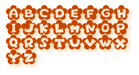

Flowerについて
Windows用のTTFontです。ちょっと手で書いたようなデザインの文字ができました。
●Flower Ver1.0●使い方
あなたのPCのFONTフォルダにインストールしてくださいね。画像ソフトなどでぺたぺた打ち込んで、カードや手紙などにも使えます。
※大文字しかありませんので、Shiftを押しながらか、Caps Lockキーを入れたままでご利用ください。不便ですいません。そのうち改善予定。
さんぷる

●使用条件
フリーウェア
●ウイルスチェック
済み
●禁止事項
加工再配布、無断転載禁止です。他メディアへの転載はご連絡ください。
●免責事項
これらをインストールすることによって起こりうる事には作者は一切関与いたしません。ご了承くださいませ。
●連絡先
kodue Otiai
SIDE-K/Font Make Shopこんな感じのが欲しいというようなリクエストがあったらお寄せくださいませ。